What you need
- A Windows workstation running Autodesk MotionBuilder.
- An Android phone running 6DoF Camera Tracker.
- The phone and workstation connected to the same local network.
- The Tech Story MotionBuilder camera plugin.
The supplied plugin targets MotionBuilder 2025 by default. The installer can place compatible builds into selected MotionBuilder installations, and the open-source project can be built against another installed OpenReality SDK when required.
Install the plugin
- Download the current package from the GitHub repository.
- Run
Setup_TechStoryOSCCamera_MoBu.exeand select the MotionBuilder versions where the device should be installed. Administrator permission is required for the standard Program Files location. - For a manual installation, copy
device_oscCamera.dllinto the matching MotionBuilder plugin folder, such asC:\Program Files\Autodesk\MotionBuilder 2025\bin\x64\plugins. - Restart MotionBuilder after installation.
If the device does not appear after a manual copy, confirm that the DLL was built for that MotionBuilder release and architecture.
Add the OSC Camera Tracker device
- In the Asset Browser, open Templates → Devices.
- Drag OSC Camera Tracker Device into the scene.
- Select the device under Navigator → Devices.
- On the General tab, set Sampling Rate to the rate used by the Android app. The read-only Receive Rate (Hz) property shows the measured incoming rate once streaming begins.
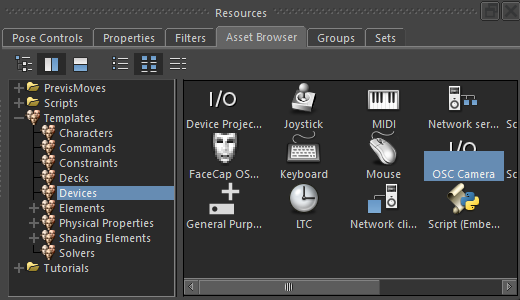
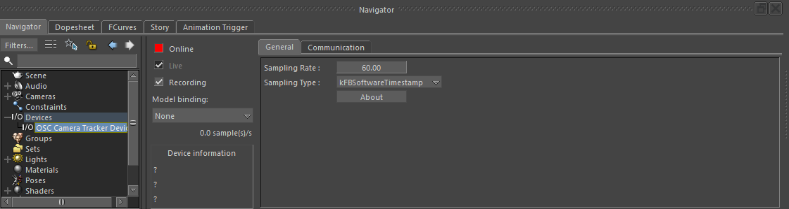
Configure the phone and UDP port
Use the setup wizard
The app can fill in the recommended MotionBuilder streaming settings for you. Run the setup wizard when the app first opens, or start it again later with the wand button.
- Select MotionBuilder when the wizard asks where you are streaming.
- Enter the MotionBuilder workstation's local IP address and the UDP port used by the plugin. The default port is 4000.
- Continue through the wizard to apply OSC, Unicast, Default axis mapping, and the recommended space scale automatically.
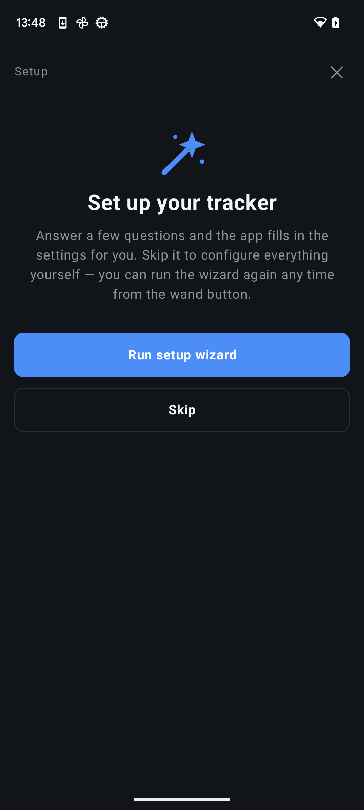
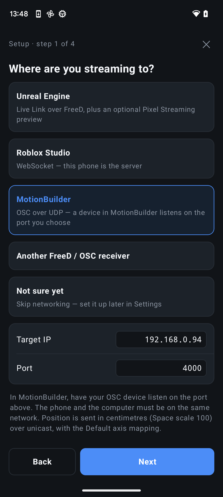
Or configure it manually
Open the device's Communication tab and choose a UDP port. The default is 4000. Use the same value as the app's Target Port.
| App setting | Recommended value | Matching device setting |
|---|---|---|
| Protocol | OSC | The device accepts the app's OSC pose, lens, and diagnostics messages. |
| Target IP | MotionBuilder workstation's local IPv4 address | The device listens on the workstation. |
| Target Port | 4000, or another unused UDP port | Communication → UDP Port must match. |
| Send mode | Unicast | Sends directly to the MotionBuilder workstation. |
| Axis mapping | Default | The plugin converts X-right, Y-forward, Z-up into MotionBuilder coordinates. |
| Space scale | 1 | Use device Space Scale 100 to convert metres to centimetres. |
| Stream rate | Your intended scene or capture rate | Set the same General → Sampling Rate. |
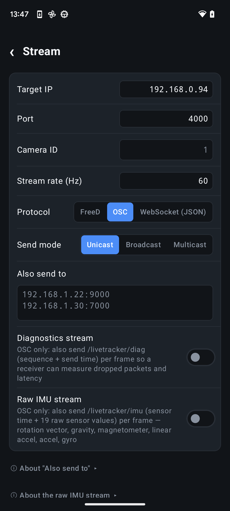
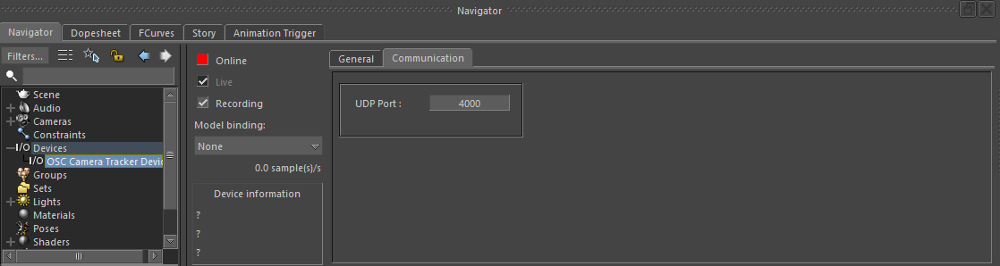
If you prefer the app's Space scale set to 100, set the device's Space Scale to 1 instead. Apply the centimetre conversion in one place only.
Put the device online and bind a camera
- Start the OSC stream in 6DoF Camera Tracker.
- Enable Online on the MotionBuilder device. Its status changes from Listening on UDP port… to Receiving data when valid poses arrive.
- Open Model binding on the device.
- Create or select a camera and bind it to the device's Camera template.
- Press Zero pose in the app at the intended origin and verify the camera follows the phone.
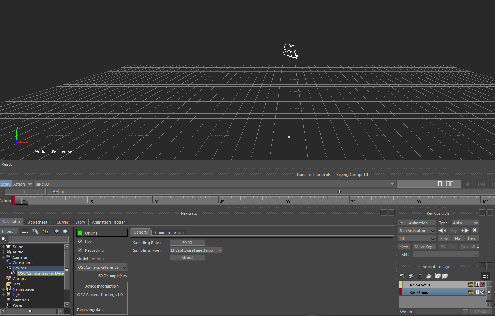
With the app's Default axis mapping, the device converts the right-handed tracker frame into MotionBuilder's X-forward, Y-up, Z-right frame. Use Position Sign or Rotation Sign only when a custom mapping needs a per-axis correction.
Use lens data and depth of field
Calibrate lens encoders in the app
Open Lens & encoders in 6DoF Camera Tracker to convert raw encoder readings into physical lens values before they are sent to MotionBuilder.
- Enter the encoder's Min, Max, and Step values for each connected lens control.
- Enable Calibrate for zoom and enter the lens's minimum and maximum focal length in millimetres.
- Set the corresponding calibration values for focus and iris when those channels are in use.
- Move each control through its range and confirm that the values reported by the app match the physical lens.
Adjust lens values from the Lens panel
While tracking or streaming, open the Lens tab on the main screen to control the virtual lens directly from the phone.
- Zoom adjusts focal length in millimetres.
- Focus adjusts focus distance in metres.
- Iris adjusts the lens aperture as an f-number.
The displayed values use the calibration ranges configured in Lens & encoders and are included in the live OSC stream.
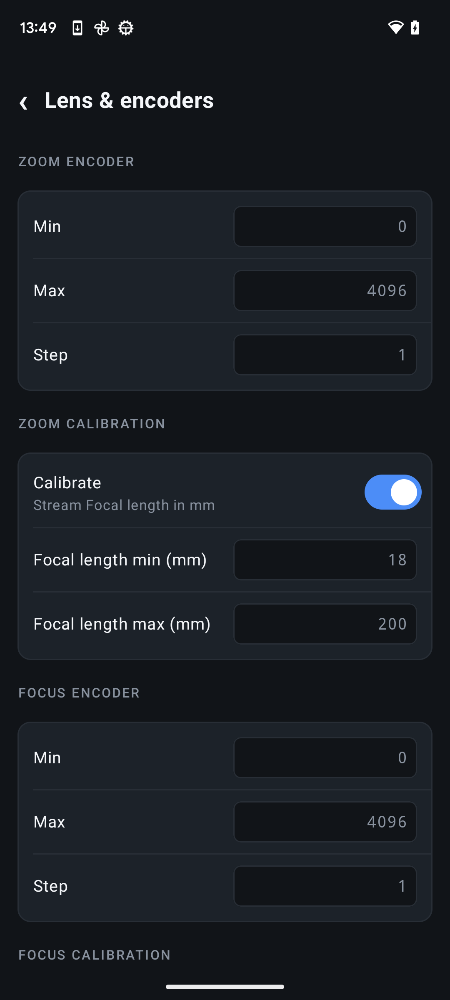
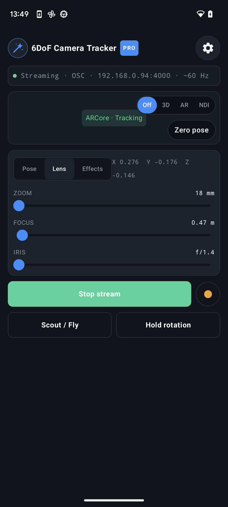
Use the calibrated values in MotionBuilder
Zoom, focus, and iris channels calibrated in the app arrive as physical values. Uncalibrated channels can be remapped with the device's Raw Range and Output Range properties.
- Enable Use Depth of Field in the MotionBuilder camera's Render Options.
- The device drives camera focal length, Specific distance, and Focus angle.
- Adjust Focus Angle Scale if the calculated focus cone needs scene-specific tuning.
- Use the separate Iris output in a relation constraint when another effect needs the incoming f-number.
Open the device's properties to inspect the incoming focal length, focus distance, iris, and focus angle. The same panel provides raw and output ranges for channels that are not calibrated in the phone app.
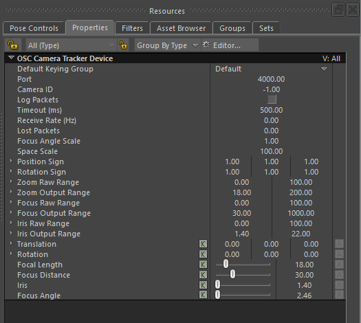
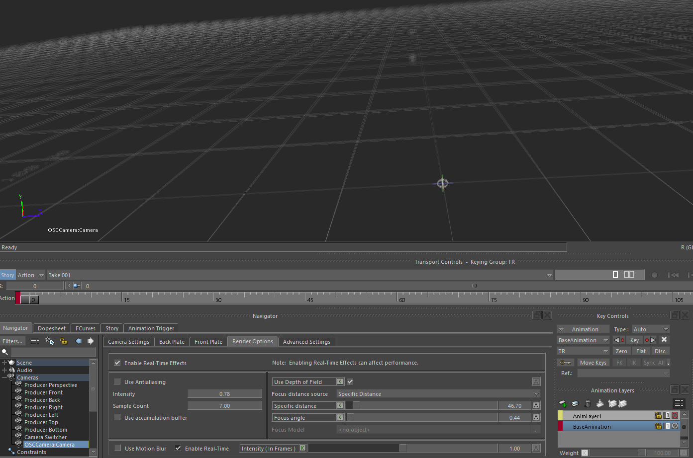
View MotionBuilder on the phone
You can use the phone as a wireless return viewfinder while it continues driving the MotionBuilder camera. The two connections work independently:
- OSC sends tracking and lens data from 6DoF Camera Tracker to MotionBuilder.
- OBS Studio captures the MotionBuilder viewport and sends the resulting program view back to the phone.
- In OBS Studio, add a Window Capture or Display Capture source containing the MotionBuilder viewport.
- Frame that source in the OBS program output at the resolution and frame rate you want on the phone.
- Send the OBS program output to 6DoF Camera Tracker using native WHIP or NDI through the DistroAV plugin.
- On the phone, select the OBS or NDI viewfinder mode while leaving the OSC tracking stream active.
If the OBS return picture disconnects, the OSC camera stream can continue driving MotionBuilder. This also lets you choose WHIP for a simple setup or NDI when lower preview latency is more important.
Record a tracked take
Record live in MotionBuilder
- Confirm the device shows Receiving data and the camera moves correctly.
- Enable Recording on the device.
- Arm the camera animation nodes you want to capture and use MotionBuilder's normal transport recording controls.
- Stop recording, take the device offline if you want to review without live input, and play back the take.
The device records incoming poses as animation keys, so the result can be edited with the normal MotionBuilder animation workflow.
Record on the phone and export FBX
For a take that does not depend on live network delivery, record the tracked motion directly in 6DoF Camera Tracker. The app stores the tracking samples locally on the phone, and you can export the completed take as an FBX file for use in MotionBuilder.
- Start a local recording in 6DoF Camera Tracker before performing the camera move.
- Stop and review the take on the phone.
- Export the recording as FBX and transfer the file to the workstation.
- Import the FBX into MotionBuilder and use the recorded camera animation in the scene.
Local recording captures the motion on the phone before any OSC packets are sent. This makes FBX export the better workflow for important takes where every recorded sample should be preserved, while live OSC remains useful for monitoring and immediate feedback.
Troubleshooting
| Symptom | Check |
|---|---|
| Device is missing from Templates | Confirm the DLL is in the correct version's bin\x64\plugins folder and restart MotionBuilder. A DLL built for another SDK version may not load. |
| Status stays on “Listening” or “No data” | Confirm the workstation IP, matching UDP port, active app stream, and Windows Firewall permission. Restart Online after changing the port. |
| Receive Rate is lower than expected | Match the app stream rate and device Sampling Rate, then check Wi-Fi quality. Enable Stream diagnostics in the app to populate Lost Packets. |
| Camera movement has the wrong scale | Use app Space scale 1 with device Space Scale 100, or app 100 with device 1. Do not convert in both places. |
| An axis moves in the wrong direction | Return the app to Default mapping first, then use the device Position Sign or Rotation Sign for a deliberate per-axis flip. |
| Lens response is incorrect | Calibrate the physical channel in the app or configure the matching Raw Range and Output Range on the device. |
For source code, build instructions, current plugin files, and issue reporting, visit the mobu-device-camera-plugin repository.